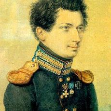
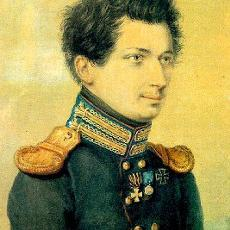

Автор проекта Конституции и один из главных идеологов движения декабристов, Никита Муравьев родился в семье поэта, одного из крупнейших деятелей русского просвещения, Михаила Никитича Муравьева. Матерью будущего декабриста была представительница древнего дворянского рода Екатерина Федоровна (в девичестве Колокольцева).
Юноша получил блестящее домашнее образование, знал шесть языков, среди которых — французский, немецкий, английский и, что немаловажно, русский, которым он владел в совершенстве. Знание родного языка не было обязательным в среде русского дворянства начала XIX века. Муравьев окончил физико-математическое отделение Московского университета, а после получил чин коллежского регистратора в департаменте Министерства юстиции. Спокойную жизнь петербургского чиновника он променял на сражения и тяготы военных походов: в начале войны с Наполеоном сбежал из дома в действующую армию, где получил чин прапорщика. Молодой офицер прошел всю военную кампанию 1813–1814 годов, был участником сражений при Дрездене и Лейпциге, а позже был прикомандирован к Арсению Закревскому, занимавшему пост дежурного генерала главного штаба русских войск в Вене и сражался против войск Наполеона, вернувшегося с острова Эльба. В 1815 году, будучи в Париже в свите офицеров Генерального штаба, Никита Муравьев познакомился с главным теоретиком французских либералов — писателем Бенжаменом Констаном, и французским священником, деятелем Великой французской революции Анри Грегуаром. Проникшись их идеями и увидев ряд социальных изменений за границей, молодой офицер вернулся на родину. 1816 год стал годом основания тайного общества Союз спасения, в создании которого Муравьев принял самое деятельное участие. Союз спасения возник после запрещения деятельности преддекабристских организаций — «Священной артели» и «Семеновской артели». О том, что обсуждалось на собраниях тайных обществ, можно судить по сохранившимся запискам Ивана Якушкина. Декабристы пытались создать сплоченную и сильную организацию, способную привести страну к республиканской форме правления. Союз спасения был расформирован, и большая часть его членов вошла в Военное общество, позже был основан Союз благоденствия, а затем, в 1821 году, Муравьев инициирует создание Северного общества, члены которого и подняли знаменитое декабрьское восстание. В том же 1821-м Никита Муравьев восстанавливается на службе в Генеральном штабе, а зимой, находясь в Минске, разрабатывает первый проект Конституции. Положения первой редакции документа были раскритикованы будущими декабристами. Из недостатков — высокий имущественный ценз и безземельное освобождение крестьян. Однако этот проект предполагал уничтожение крепостного права, рекрутчины и военных поселений. В последующих редакциях Конституции ее автор учел ряд ошибок. второй вариант проекта включал в себя уже 134 статьи против 93 статей в первом. 14 декабря 1825 года Никиты Муравьева не было в Петербурге, однако по доносу Аркадия Майбороды он был арестован в собственном имении в селе Тагино и доставлен в столицу. 26 декабря Никита Муравьев был заключен в Петропавловскую крепость, а почти через год, 10 декабря 1826-го, отправлен в Сибирь. Первые годы наказания он отбывал в Читинском остроге, а с сентября 1830 года был переведен в Петровский завод, где читал курс лекций. Декабрист Михаил Лунин считал Муравьева человеком, стоящим целого университета. После сокращения срока каторги Никита Муравьев отбыл на поселение в село Урик Иркутского округа, где занимался сельским хозяйством. Уже будучи в Сибири, он продолжал писать политические сочинения и мемуары, но после ареста Лунина уничтожил бумаги. Умер знаменитый декабрист 28 апреля 1848 года. Спустя много лет после смерти Никиты Муравьева воспоминания о нем оставила его дочь, Софья Никитична (в замужестве Бибикова). Сегодня биографы располагают лишь некоторыми отрывками этого текста.
.jpg) 
